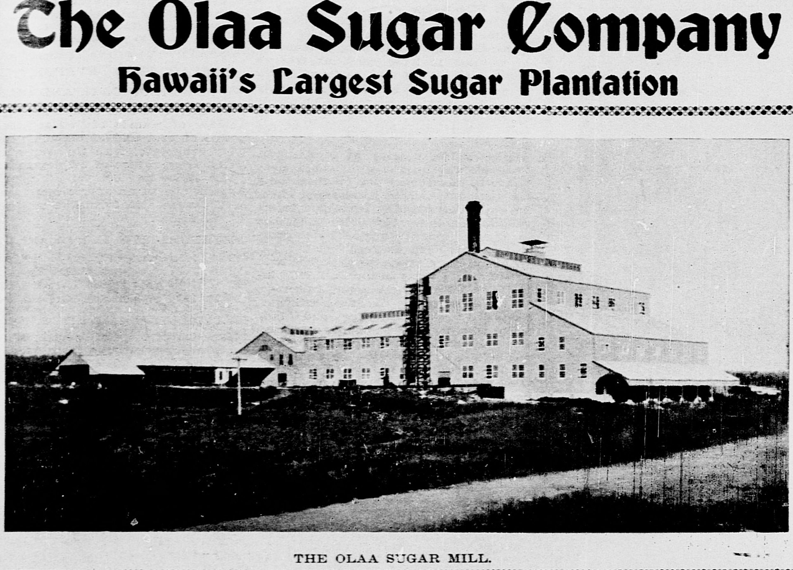

Kurtistown
Place: Kurtistown, Puna District, Hawaiʻi Island
Type: Rural plantation community
Namesake: A.G. Curtis, early merchant, postmaster, and sugar grower
Story it tells: How a general store, a post office, and Hawaiʻi's sugar industry transformed an anonymous roadside stop into one of East Hawaiʻi's enduring agricultural communities.

Today, Kurtistown is a quiet rural community along Hawaiʻi Route 11 between Hilo and Hawaiʻi Volcanoes National Park. Visitors often pass through on their way to the volcano, noticing small farms, nurseries, roadside fruit stands, and neighborhoods tucked beneath the ʻōhiʻa forests of upper Puna. The town, oddly enough, owes its existence to a general store, a post office, and one of Hawaiʻi's largest sugar plantations.
Before the twentieth century, this area formed part of the traditional land division of ʻŌlaʻa, meaning "alive," "lively," or "the place of life." The region received significant rain, supporting native forests, and became an important agricultural area. Later, as commercial agriculture expanded across East Hawaiʻi, vast tracts of ʻŌlaʻa were converted into plantations producing coffee, bananas, and eventually sugar.
The settlement itself began with a far less original name. Residents simply called it "11 Miles," based on its location eleven miles from Hilo along Volcano Road. That changed in 1902 when businessman and sugar grower A.G. Curtis opened a general store that also became the community's first United States Post Office. As postmaster and the community's leading merchant, Curtis lent his name to the growing community.
The town did not become Curtistown. Instead, government officials adopted the spelling Kurtistown, replacing the "C" with a "K" because the Hawaiian language contains no letter C.
Although the neighboring Keaʻau community housed the massive ʻŌlaʻa Sugar Mill, Kurtistown became one of the plantation's principal residential and agricultural centers. Cane fields stretched for miles on either side of Volcano Road, while plantation camps housed Japanese, Filipino, Portuguese, Puerto Rican, Native Hawaiian, and other workers who worked the land. A network of plantation roads, rail lines, and flumes connected the fields with the mill, making Kurtistown an important cog in one of the largest sugar operations in the islands.
The arrival of the Hilo Railroad further developed the settlement. Sugar harvested around Kurtistown could be transported efficiently to the mill and on to Hilo Harbor for export. The railroad also connected what had once been an isolated agricultural outpost to the island's largest town, encouraging businesses, schools, churches, and community organizations to develop alongside the plantation economy.
Like many plantation communities, Kurtistown had distinct ethnic camps developed around the fields, each contributing languages, customs, religious traditions, and businesses that gradually blended into the multicultural character that defines Hawaiʻi today. Temples, independent stores, and neighborhood gathering places emerged alongside company housing, creating a community identity.
The sugar era gradually came to an end during the late twentieth century. After years of financial struggles, the ʻŌlaʻa Sugar Company became Puna Sugar before the business finally closed in 1984. Kurtistown reinvented itself. Former plantation lands were divided into small agricultural holdings, many workers acquired land of their own, and the community shifted toward diversified farming, tropical flower production, fruit orchards, coffee, and rural residential living.
That prolonged agricultural identity remains visible today. Kurtistown is known for its plant nurseries, roadside fruit stands, bonsai gardens, and small farms, while many residents commute to nearby Hilo for work. The town's layout, neighborhoods, and even its unusual spelling continue to reflect decisions made more than a century ago.
Few Hawaiʻi place names tell such a deceptively simple story. What appears to be an ordinary rural town is the product of plantation expansion, federal postal administration, Hawaiian language, immigration, and economic volatility. Kurtistown reminds us that even the smallest communities may preserve some of the islands' most fascinating histories within their names.